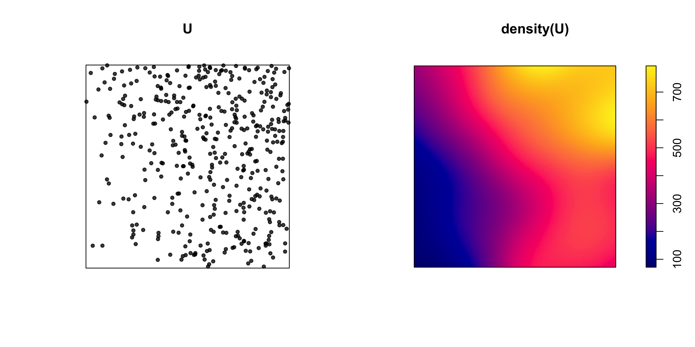
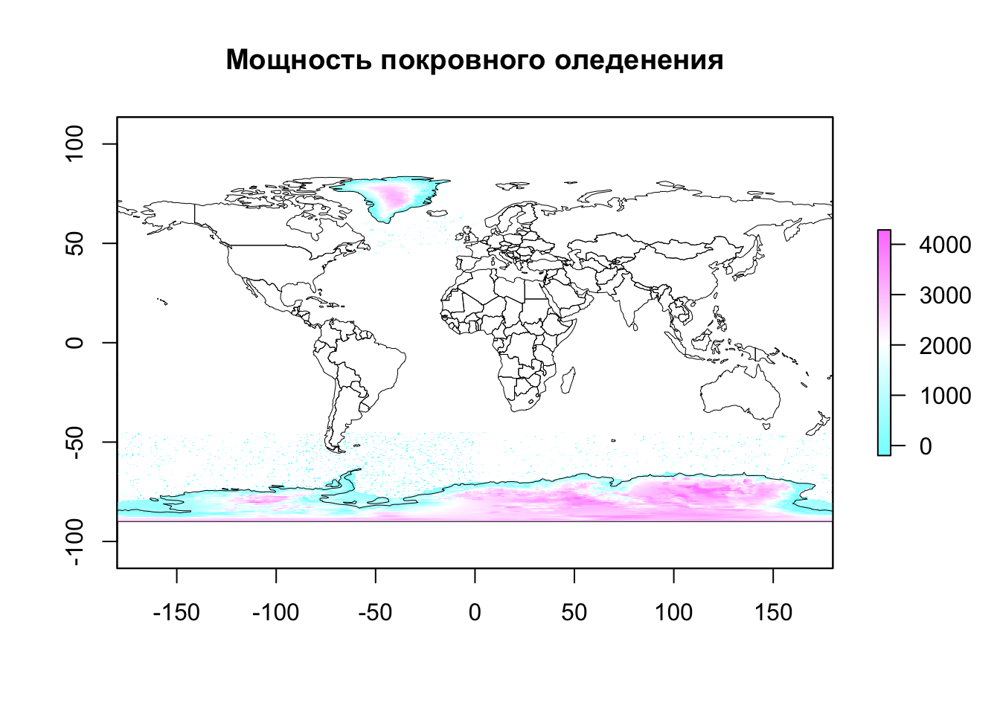
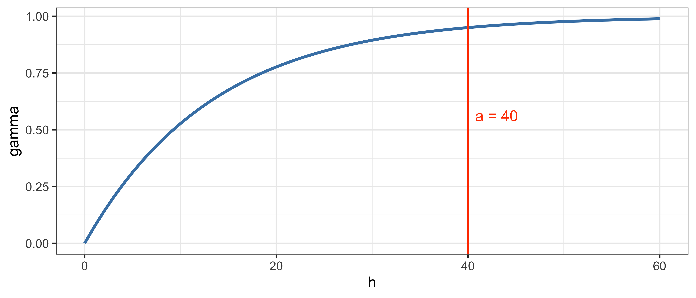
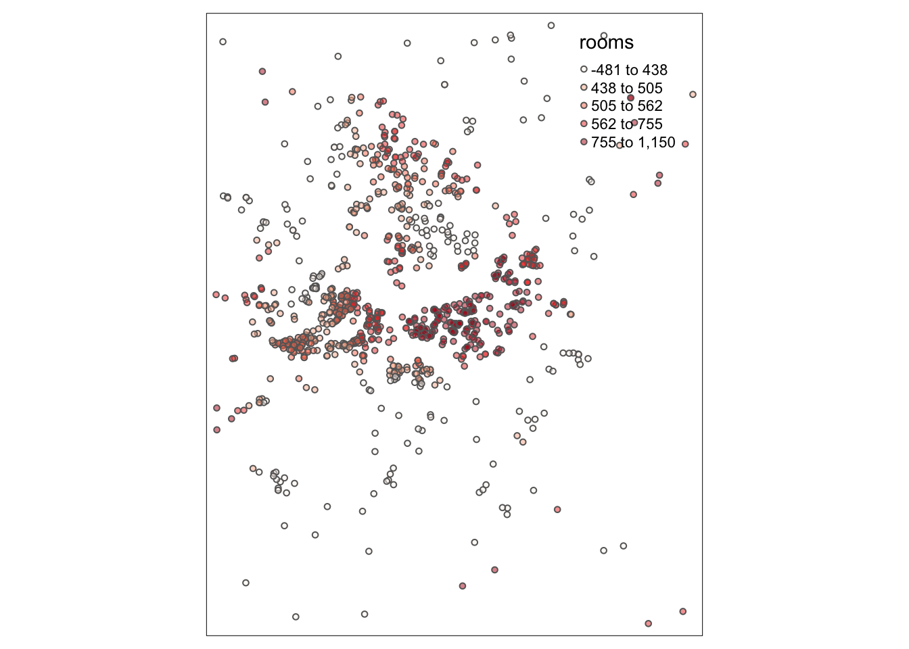
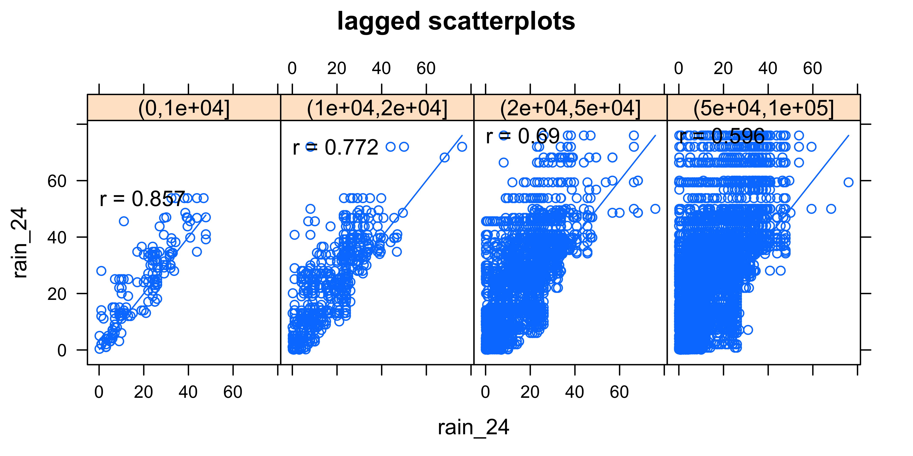
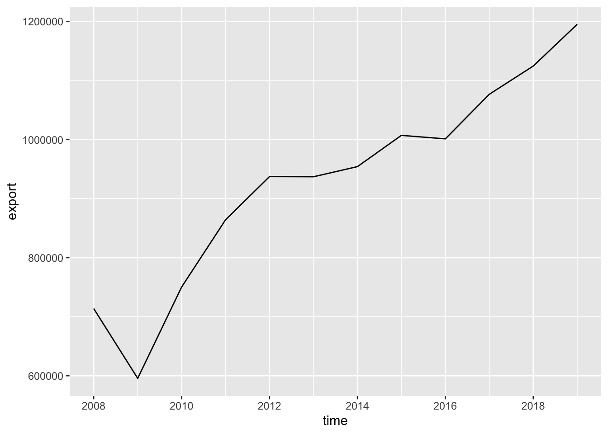
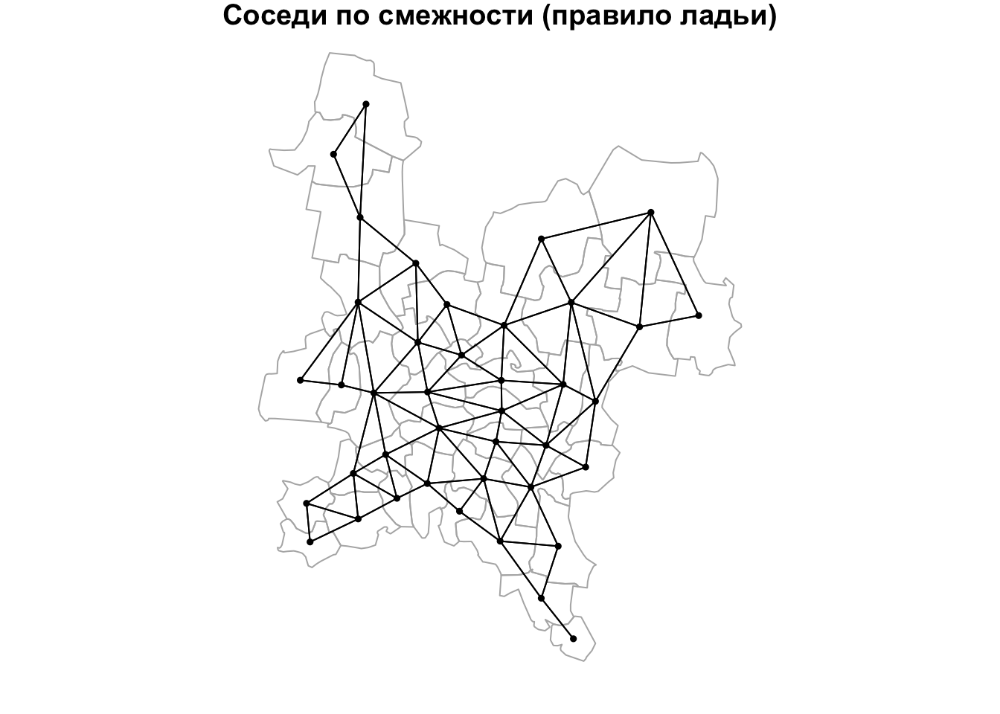
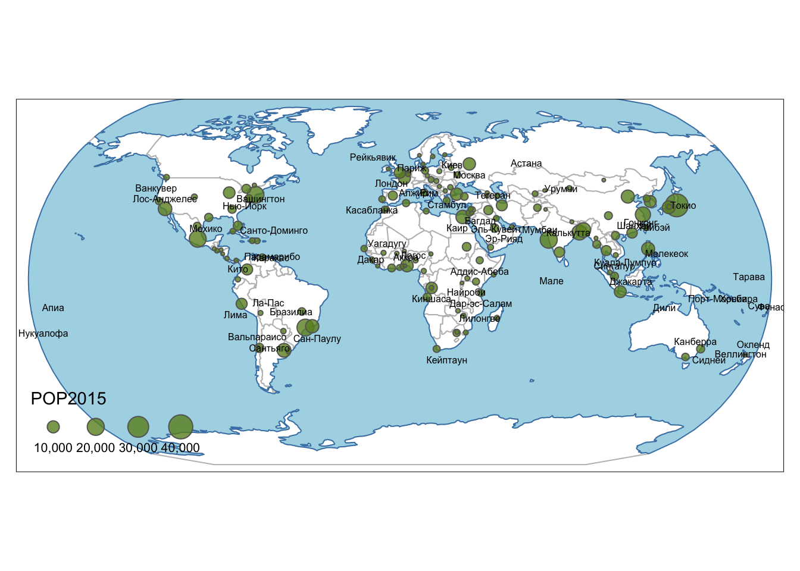
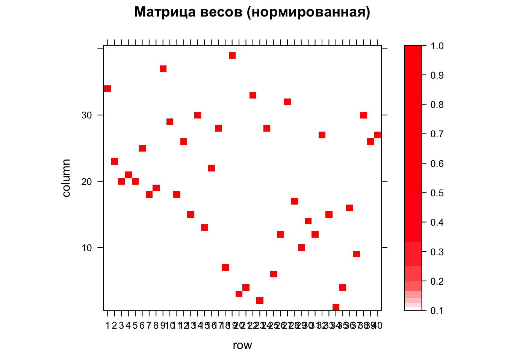
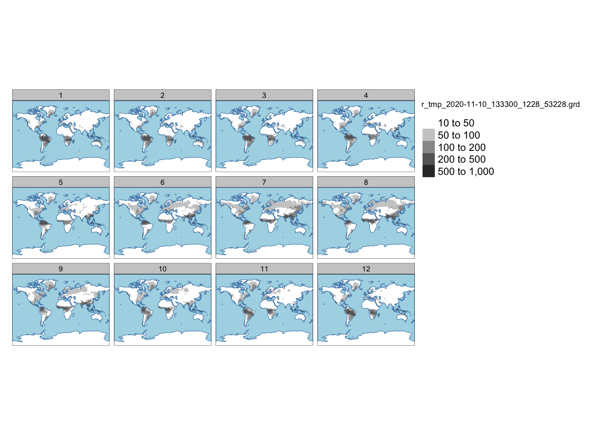

Глава 12 Растровый анализ
Предварительные условия
Для выполнения кода данной лекции вам понадобятся следующие пакеты:
12.1 Введение
Растровая модель данных представляет собой мощный инструмент абстракции пространственных распределений и выполнения пространственного анализа. На первый взгляд, растр обладает целым рядом ограничений по сравнению с векторной моделью: не позволяет оперировать отдельными объектами, их границами и так далее. Растровые карты и снимки мы часто оцифровываем, выделяя объекты, чтобы на основе них можно было что-то посчитать. Самые первые ГИС были исключительно растровыми, что сейчас воспринимается как архаизм.
Однако за ширмой ограниченности растровой модели кроются огромные аналитические возможности. Растровая модель обладает внутренней топологией: ее ячейки соприкасаются друг с другом, что позволяет моделировать непрерывные в пространстве и динамические явления (при которых происходит перемещение вещества, энергии или информации в пространстве). Поскольку ячейки растра имеют одинаковый размер, к ним можно применять однотипные операции, которые будут давать предсказуемый результат вне зависимости от конкретной локации в пределах растра. Это также позволяет сделать обработку растра очень быстро.
12.2 Растровая алгебра
Существует классификация операций растрового анализа, введенная американским профессором Даной Томлином, которая объединяет их под общим названием “алгебра карт” или “растровая алгебра” (Tomlin 2012). Предполагая, что обработке подвергается каждая ячейка растра, данная классификация разделяет все операции по охвату относительно текущей ячейки
- Локальные — анализируется одна ячейка растра или совпадающие в пространстве ячейки нескольких растров
- Фокальные — анализируются все ячейки в окрестности. Окрестность может быть как фиксированной, так и расширенной (expanded), когда ее размер управляется внешними факторами, например множеством объектов, до которых требуется вычислить расстояние. Информация по соседним ячейкам может быть как из исходного растра, так и из внешнего. Фокальные методы алгебры карт также называются методами анализа соседства.
- Зональные — анализируются все ячейки в пределах зон, определяемых извне (например, вторым растровым слоем).
- Глобальные — анализируются все ячейки растра.
12.2.1 Локальные операции
Локальные операции связаны с алгебраическими преобразованиями значений в ячейках. Например, цифровую модель высот в футах можно перевести в цифровую модель высот в метрах. Для этого нужно значение в каждой ячейке умножить на \(0.3048\). В локальных операциях могут участвовать несколько растров. Например, если у нас есть растровые поверхности плотности населения за разные года, мы можем вычесть одну поверхность из другой, чтобы получить поверхность изменений плотности, выяснить где она увеличилась, уменьшилась или осталось прежней. К локальным операциям относится также оверлей растров, при котором получается взвешенная сумма значений по нескольким растрам. И в том и в другом случае анализируются ячейки с нескольких растров, которые совпадают в пространстве.
В качестве примера определим мощность покровного оледенения в Антарктике и Гренландии, путем вычитание двух моделей ETOPO1, одна из которых показывает рельеф коренных пород (bedrock), а вторая — видимый рельеф поверхности (ice surface):
# ЛОКАЛЬНЫЕ ОПЕРАЦИИ
# Вычисление толщины покровного оледенения
# Чтение данных
bed = raster('data/etopo1_bed.tif')
ice = raster('data/etopo1_ice.tif')
countries = st_read('data/countries.gpkg')
## Reading layer `admin_0_map_units' from data source `/Users/tsamsonov/GitHub/r-geo-course/data/countries.gpkg' using driver `GPKG'
## Simple feature collection with 183 features and 72 fields
## geometry type: MULTIPOLYGON
## dimension: XY
## bbox: xmin: -180 ymin: -90 xmax: 180 ymax: 83.64513
## geographic CRS: WGS 84
borders = countries %>% st_geometry()
# отображение данных
classes = classIntervals(values(bed), 20)
brks = classes$brks
nclass = length(brks) - 1
plot(bed,
breaks = brks,
col = gray.colors(nclass),
main = 'ETOPO Bedrock',
legend = F)

# вычисление разности
ice.depth = ice - bed
plot(ice.depth,
col = cm.colors(255),
main = 'Мощность покровного оледенения')
plot(borders,
border = 'black',
lwd = 0.5,
add = TRUE)
# сделаем пустыми все ячейки, в которых толщина льда равна нулю
ice.depth[ice.depth == 0] = NA
plot(ice.depth,
col = cm.colors(255),
main = 'Мощность покровного оледенения')
plot(borders,
border = 'black',
lwd = 0.5,
add = TRUE)
12.2.2 Фокальные операции
В фокальных операциях участвует не только сама ячейка или совпадающие с ней ячейки других растров, но также ячейки, находящиеся в некоторой окрестности (опять же, в одном или нескольких растрах одновременно). Данный вид анализа подразделяется на две категории: фокальный анализ с фиксированной окрестностью и с расширенной окрестностью.
12.2.2.1 Фиксированная окрестность
В общем случае фиксированная окрестность может иметь различную форму, однако наиболее часто используется квадратная окрестность размером \(3\times3\):

Виды растровых окрестностей. Темной точкой выделена анализируемая ячейка
Фокальные операции с фиксированной окрестностью — привычное дело в обработке изображений. Они работают по принципу “плавающего окна”. Выбранная окрестность (квадратная, круглая и т.д.) представляется в виде матрицы коэффициентов — так называемого ядра свёртки (convolution kernel). Далее эта матрица перемещается, позиционируясь последовательно над каждой ячейкой растра, и значение в этой ячейке заменяется на взвешенную сумму значений ячеек в окрестности, умноженных на соответствующие коэффициенты ядра свертки. Например, если ядро состоит из единиц, то будет посчитана обычная сумма.
С помощью фокального анализа можно выполнить сглаживание изображения, которое убирает из него мелкие детали (высокочастотные составляющие яркостного сигнала). В качестве такого изображения может быть цифровая модель рельефа или космический снимок. Чтобы выполнить сглаживание, коэффициенты должны быть такими, чтобы получаемая взвешенная сумма осредняла значения в соседних ячейках. Самый простой вариант — это рассчитать среднее арифметическое. В этом случае коэффициенты ядра свертки будут равны \(1/k\), где \(k\) — количество ячеек в окрестности. Для матрицы \(3\times3\) они будут равны, соответственно \(1/9\):

# Среднее
wgt = matrix(c(1, 1, 1,
1, 1, 1,
1, 1, 1) / 9,
nrow = 3)
# на самом деле проще написать так:
# wgt = matrix(1/9, 3, 3), но полная форма записана для наглядности
# выполним обработку ЦМР с помощью фокального фильтра
filtered = focal(dem, w = wgt)
spplot(stack(dem, filtered),
names.attr=c('Исходный рельеф', 'Сглаживание средним'))
Более мягким эффектом сглаживания, который к тому же не нарушает дифференцируемость поверхности, является гауссово сглаживание. Коэффициенты в матрице Гаусса убывают от центральной ячейки к краям матрицы по закону Гаусса-Лапласа, что позволяет придать центральной ячейке более высокий вес по сравнению с ячейками, располагающимися на краю анализируемой окрестности:
# Гауссово (параметр 0.5 - это стандартное отклонение в единицах измерения растра)
wgt = focalWeight(dem, 0.5, "Gauss")
filtered = focal(dem, wgt)
spplot(stack(dem, filtered),
names.attr=c('Исходный рельеф', 'Гауссово сглаживание'))
Еще одна интересная область применения фильтрации — это обнаружение границ (change detection). Границы на изображении возникают в тех местах, где его яркость резко меняет свое значение (в одном или нескольких каналах). Например, на фотографии контур лица может быть распознан по перепаду яркости между его изображением и фоном (если он имеет существенно отличный цвет). Поскольку перепад яркости соответствует экстремальным значениям производной поверхности (отрицательным или положительным), его также можно определить путем фокального анализа, а затем отсечь ячейки растра, в которых значение этой производной по модулю превышает заданный порог (то есть, имеет необходимый контраст).
Рассмотрим, как можно выделить уступы континентального склона океана путем применения фильтра Собеля для выделения границ:
# Матрица Собеля:
wgt = matrix(c(1, 2, 1,
0, 0, 0,
-1,-2,-1) / 4,
nrow=3)
filtered = focal(dem, wgt)
# Это поверхность производных:
plot(filtered,
col = gray.colors(128),
main = 'Производная поверхности')
# Отберем все ячейки, обладающие высокими значениями производных
faults = (filtered < -1500) | (filtered > 1500)
faults[faults == 0] = NA
# Визуализируем результат
plot(dem,
col = rev(rainbow(20)),
main = 'Уступы континентального склона',
legend = FALSE)
plot(faults,
col = 'black',
legend = FALSE,
add = TRUE)
Еще один распространенный случай использования фокальных операций — это морфометрический анализ поверхностей. Квадратная окрестность \(3\times3\) вокруг каждой ячейки формирует локальную поверхность, производные которой дают представление об уклоне, экспозиции и прочих морфометрических параметрах. Их можно вычислить с помощью функции terrain() из пакета raster:

# углы наклона
slope = terrain(dem, opt = 'slope', unit = 'degrees')
spplot(slope,
col.regions = heat.colors(20),
names.attr=c('Углы наклона'))
# экспозиция
aspect = terrain(dem, opt = 'aspect', unit = 'degrees')
spplot(aspect,
col.regions = rainbow(20),
names.attr=c('Экспозиции склона'))
Вычисление производных поверхности позволяет не только исследовать рельеф, но также строить его изображения. Например, хорошо знакомую всем по картам аналитическую отмывку рельефа (hillshade). Яркость поверхности в этом способе изображения зависит от угла между направлением на источник освещения (откуда светит Солнце) и нормалью к поверхности. Нормаль можно вычислить как напрямую через производные поверхности, так и восстановить на основе значений угла наклона и экспозиции в точке, что и используется в пакете raster. Обратите внимание на то, что для того чтобы повысить наглядность (контрастность) изображения, мы умножаем высоты рельефа на 20. Это стандартная практика для мелкомасштабных карт:
# отмывка
slope2 = terrain(dem * 20, opt = 'slope')
aspect2 = terrain(dem * 20, opt = 'aspect')
# параметры angle и direction функции hillShade определяют азимут и высоту источника освещения:
hill = hillShade(slope2, aspect2, angle = 45, direction = 315)
plot(hill,
col = gray.colors(128),
main = 'Отмывка рельефа')
12.2.2.2 Расширенная окрестность
Расширенность окрестности означает, что она определяется не фиксированным шаблоном, а условием, которое должно выполниться для того, чтобы анализ в ячейке считался выполненным. Типичный пример анализа на основе расширенной окрестности — это операции, основанные на вычислении расстояний на растровой матрице, такие как аллокация, определение кратчайшего пути на поверхности сопротивления, и собственно, само вычисление расстояние.
В мелкомасштабных тематических атласах часто можно встретить карты доступности той или иной географической локации, которые в форме изолиний показывают время движения до ближайшего населенного пункта. Эти изолинии можно построить по растровой поверхности, в каждой ячейке которой зафиксировано расстояние до ближайшего населенного пункта.
Рассмотрим построение аналогичной поверхности на примере доступности станций метро (по расстоянию). Для этого нам понадобится представить растр в виде матрицы точек, рассчитать для этих точек расстояния до ближайших станций метро и присвоить эти значения выходному растру:
# Определение Евклидовых расстояний — расширенное соседство
# Чтение данных
roads = st_read("data/roads.gpkg") # Дороги
## Reading layer `roads' from data source `/Users/tsamsonov/GitHub/r-geo-course/data/roads.gpkg' using driver `GPKG'
## Simple feature collection with 2213 features and 12 fields
## geometry type: MULTILINESTRING
## dimension: XY
## bbox: xmin: 410946.9 ymin: 6176676 xmax: 415890.8 ymax: 6181910
## projected CRS: WGS 84 / UTM zone 37N
poi = st_read("data/poi_point.gpkg") # Точки интереса
## Reading layer `poi_point' from data source `/Users/tsamsonov/GitHub/r-geo-course/data/poi_point.gpkg' using driver `GPKG'
## Simple feature collection with 6623 features and 9 fields
## geometry type: POINT
## dimension: XY
## bbox: xmin: 410947.3 ymin: 6176678 xmax: 415889.9 ymax: 6181909
## projected CRS: WGS 84 / UTM zone 37N
rayons = st_read("data/boundary_polygon.gpkg") # Границы районов
## Reading layer `boundary_polygon' from data source `/Users/tsamsonov/GitHub/r-geo-course/data/boundary_polygon.gpkg' using driver `GPKG'
## Simple feature collection with 11 features and 5 fields
## geometry type: MULTIPOLYGON
## dimension: XY
## bbox: xmin: 410946.9 ymin: 6176676 xmax: 415890.8 ymax: 6181910
## projected CRS: WGS 84 / UTM zone 37N
stations = st_read("data/metro_stations.gpkg") # Станции метро
## Reading layer `metro_stations' from data source `/Users/tsamsonov/GitHub/r-geo-course/data/metro_stations.gpkg' using driver `GPKG'
## Simple feature collection with 45 features and 3 fields
## geometry type: POINT
## dimension: XY
## bbox: xmin: 411007.5 ymin: 6176747 xmax: 415852.2 ymax: 6181892
## projected CRS: WGS 84 / UTM zone 37N
water = st_read("data/water_polygon.gpkg") # Водные объекты
## Reading layer `water_polygon' from data source `/Users/tsamsonov/GitHub/r-geo-course/data/water_polygon.gpkg' using driver `GPKG'
## Simple feature collection with 8 features and 7 fields
## geometry type: POLYGON
## dimension: XY
## bbox: xmin: 411595.6 ymin: 6176676 xmax: 415890.8 ymax: 6180765
## projected CRS: WGS 84 / UTM zone 37N
# Создаем пустой растр с охватом, равным охвату станции
dist_grid = stations %>%
st_bbox() %>%
st_as_stars(dx = 25, dy = 25) %>%
mutate(dist = st_as_sf(., as_points = TRUE, merge = FALSE) %>%
st_distance(stations, .) %>%
apply(2, min))
# Визуализируем результат
ggplot() +
geom_stars(data = dist_grid['dist']) +
scale_fill_gradientn(colours = c('white', 'red', 'black')) +
coord_sf(crs = st_crs(stations)) +
geom_sf(data = water, size = 0.1) +
geom_sf(data = roads, size = 0.1) +
geom_sf(data = stations) +
ggtitle('Расстояние до ближайшей станции метро') +
theme_bw()
12.2.3 Зональные операции
Зональные операции связаны с агрегированием растровых данных по площадным зонам. В пределах каждой зоны вычисляется одна или несколько характеристик значений анализируемого растра: среднее, максимум и т.д. Как правило, зоны задаются в виде вспомогательного растрового или векторного набора данных. В случае растра каждая ячейка должна содержать идентификатор (номер) зоны, к которой она относится. Совокупность ячеек, имеющих одинаковый идентификатор, определяет территорию, которую покрывает зона с этим идентификатором. Если зоны представлены векторным набором пространственных объектов, то каждый объект (полигон) также должен иметь собственный идентификатор. Теоретически в одном наборе данных может быть несколько пространственно не связанных объектов, относящихся к одной зоне (например, зона экваториального климата состоит из трех ареалов). В этом случае агрегирование данных будет произведено сразу по трем полигонам. Таким образом, количество получаемых в результате зональной статистики значений определяется количеством зон, но может не совпадать с общим количеством полигонов, которыми эти зоны представлены.
В качестве примера рассмотрим вычисление среднеклиматических параметров WorldClim в пределах различных типов земельного покрова (Land Cover), которые доступны в пакете tmap:

data(land, package = 'tmap')
pal = c("#003200", "#3C9600", "#006E00", "#556E19", "#00C800", "#8CBE8C",
"#467864", "#B4E664", "#9BC832", "#EBFF64", "#F06432", "#9132E6",
"#E664E6", "#9B82E6", "#B4FEF0", "#646464", "#C8C8C8", "#FF0000",
"#FFFFFF", "#5ADCDC")
ggplot() +
geom_stars(data = land) +
scale_fill_manual(values = pal, guide = guide_legend(ncol = 3), name = NULL) +
coord_sf(crs = st_crs(land)) +
theme(legend.position = 'bottom')
Оператор
@означает обращение к слоту объекта. Слоты представляют собой объекты, являющиеся внутри других объектов, являющихся экземплярами классов S4.
Предварительно необходимо убедиться, что оба растра имеют совпадающий охват (экстент) и пространственное разрешение. Обратите внимание на то, что, поскольку растр земельного покрова категориальный, для его передискретизации необходимо использовать метод ближайшего соседа (Nearest Neighbor), который для каждого пиксела нового растра берет значение в ближайшем к нему пикселе исходного растра:
temp
## stars object with 3 dimensions and 1 attribute
## attribute(s), summary of first 1e+05 cells:
## tmean1
## Min. :-42.10
## 1st Qu.:-34.08
## Median :-30.85
## Mean :-31.99
## 3rd Qu.:-29.50
## Max. :-27.80
## NA's :98298
## dimension(s):
## from to offset delta refsys point
## x 1 2160 -180 0.166667 +proj=longlat +datum=WGS8... NA
## y 1 900 90 -0.166667 +proj=longlat +datum=WGS8... NA
## band 1 12 NA NA NA NA
## values
## x NULL [x]
## y NULL [y]
## band tmean1,...,tmean12
land
## stars object with 2 dimensions and 4 attributes
## attribute(s):
## cover cover_cls
## Water bodies :393060 Water :393060
## Snow / Ice : 61986 Snow/ice : 61986
## Herbaceous : 21377 Forest : 48851
## Tree Open : 16171 Other natural vegetation : 32611
## Sparse vegetation: 12247 Bare area/Sparse vegetation: 26904
## Cropland : 11658 Cropland : 17843
## (Other) : 66701 (Other) : 1945
## trees elevation
## Min. : 0.0 Min. :-412
## 1st Qu.: 0.0 1st Qu.: 218
## Median : 0.0 Median : 608
## Mean : 15.6 Mean :1140
## 3rd Qu.: 19.0 3rd Qu.:1941
## Max. :100.0 Max. :6410
## NA's :393060 NA's :389580
## dimension(s):
## from to offset delta refsys point values
## x 1 1080 -180 0.333333 +proj=longlat +ellps=WGS8... NULL NULL [x]
## y 1 540 90 -0.333333 +proj=longlat +ellps=WGS8... NULL NULL [y]
(cover = st_warp(land['cover'], temp %>% slice(band, 1), method = 'near'))
## stars object with 2 dimensions and 1 attribute
## attribute(s), summary of first 1e+05 cells:
## cover
## Water bodies :98596
## Snow / Ice : 996
## Sparse vegetation : 400
## Bare area,consolidated (gravel,rock): 8
## Broadleaf Evergreen Forest : 0
## Broadleaf Deciduous Forest : 0
## (Other) : 0
## dimension(s):
## from to offset delta refsys point values
## x 1 2160 -180 0.166667 +proj=longlat +datum=WGS8... NA NULL [x]
## y 1 900 90 -0.166667 +proj=longlat +datum=WGS8... NA NULL [y]
# используем 'near', поскольку растр категориальныйДля вычисления средней температуры за каждый месяц в пределах каждой зоны земельного покрова выполним следующую последовательность действий:
months = 1:12
cover_types = levels(cover$cover)
zonal_stats = lapply(cover_types, function(X) {
sapply(months, function(Y) {
temp_month = temp %>% slice(band, Y) %>% pull(1)
cover %>%
mutate(masked = ifelse(cover == X, temp_month, NA)) %>%
dplyr::select(masked) %>%
pull(masked) %>%
mean(na.rm = TRUE)
})
}) %>%
bind_cols() %>%
set_names(cover_types) %>%
mutate(month = months) %>%
pivot_longer(-month, names_to = 'cover', values_to = 'tmean')Визуализируем полученные результаты:
ggplot(zonal_stats) +
geom_line(aes(x = month, y = tmean, color = cover), size = 1) +
scale_color_manual(values = pal) +
scale_x_continuous(breaks = months)
Перед вычислением целесообразно разделить растр землепользования на северное и южное полушарие (т.к. ход температур в них противоположный):
cover_north = crop(as(cover['cover'], 'Raster'), extent(-180, 180, 0, 90))
cover_south = crop(as(cover['cover'], 'Raster'), extent(-180, 180, -60, 0))
temp_north = crop(as(temp, 'Raster'), extent(-180, 180, 0, 90))
temp_south = crop(as(temp, 'Raster'), extent(-180, 180, -60, 0))
mtemp_north_tidy = zonal(temp_north, cover_north, 'mean') %>%
as_tibble() %>%
pivot_longer(-zone,
names_to = 'month',
values_to = 'tmean',
names_prefix = 'layer.',
names_transform = list(month = as.integer)) %>%
mutate(hemisphere = 'north')
mtemp_south_tidy = zonal(temp_south, cover_south, 'mean') %>%
as_tibble() %>%
pivot_longer(-zone,
names_to = 'month',
values_to = 'tmean',
names_prefix = 'layer.',
names_transform = list(month = as.integer)) %>%
mutate(hemisphere = 'south')
mtemp_tidy2 = bind_rows(mtemp_north_tidy, mtemp_south_tidy) %>%
mutate(cover = levels(cover$cover)[zone])
ggplot(mtemp_tidy2) +
geom_line(aes(x = month, y = tmean, color = cover), size = 1) +
scale_color_manual(values = pal) +
scale_x_continuous(breaks = 1:12) +
facet_wrap(~hemisphere, ncol = 1)
12.2.4 Глобальные операции
Глобальные операции охватывают все ячейки растра. По сути, можно говорить, что это частный случай зональной операции, когда зона одна и покрывает растр целиком. В пакете raster для расчета глобальных статистик можно использовать функцию cellStats(), передав ей название растра и агрегирующей функции:
12.3 Извлечение данных
Растровая модель данных обеспечивает сплошное покрытие территории (с дискретностью, определяемой размером ячейки). В то же время, достаточно часто требуется получить значения растра в заданных местоположениях. Местоположения могут быть как конкретными объектами (например, точками почвенных разрезов), так и абстрактными географическими локациями, для которых известны координаты.
Для извлечения растровых данных можно воспользоваться функцией extract(). Получать данные можно как по координатам (записанным в фрейм данных), так и используя пространственные объекты класса Spatial. Например, узнаем мощность покровного оледенения в точке в центре Гренландии:
coords = data.frame(x = -45, y = 70)
z = raster::extract(ice.depth, coords)
plot(bed,
breaks = brks,
col = gray.colors(nclass),
legend = F)
plot(ice.depth,
col = cm.colors(255),
add = TRUE)
points(coords)
text(coords, labels = z, pos = 4)
Одна из наиболее распространенных задач по извлечению растровых данных — это построение профиля вдоль заданной линии. Воспользуемся интерактивным редактором для проведения линии профиля

temprof = raster::extract(as(temp, 'Raster'), as(profile, 'Spatial'),
along = TRUE, cellnumbers = TRUE)
head(temprof[[1]])
## cell layer.1 layer.2 layer.3 layer.4 layer.5 layer.6 layer.7 layer.8
## [1,] 252105 -26.1 -26.3 -22.4 -16.0 -7.3 1.8 8.0 7.8
## [2,] 254265 -26.2 -26.4 -22.5 -16.1 -7.4 1.8 8.1 7.8
## [3,] 256425 -26.2 -26.4 -22.4 -15.9 -7.2 1.9 8.3 8.0
## [4,] 258585 -26.1 -26.4 -22.2 -15.7 -7.0 2.2 8.6 8.1
## [5,] 260745 -26.2 -26.4 -22.1 -15.6 -7.0 2.3 8.8 8.2
## [6,] 262905 -26.1 -26.3 -21.9 -15.4 -6.7 2.5 9.0 8.5
## layer.9 layer.10 layer.11 layer.12
## [1,] 2.6 -7.4 -17.9 -22.4
## [2,] 2.5 -7.5 -18.0 -22.5
## [3,] 2.7 -7.4 -18.0 -22.6
## [4,] 2.8 -7.3 -17.9 -22.6
## [5,] 2.9 -7.3 -17.9 -22.6
## [6,] 3.0 -7.1 -17.9 -22.6Для построения линии профиля далее нам необходимо преобразовать идентификаторы ячеек растра в расстояние от начала профиля:
tempdf = temprof[[1]] %>%
as_tibble() %>%
drop_na() %>%
bind_cols(st_coordinates(temp)[.$cell, ] %>% as_tibble()) %>%
mutate(dist = 0.001 * c(0, dplyr::select(., x, y) %>%
geosphere::distGeo() %>%
cumsum() %>%
head(-1))) %>%
dplyr::select(-c(x, y, cell, band)) %>%
pivot_longer(layer.1:layer.12,
names_to = 'month',
values_to = 'tmean',
names_prefix = 'layer.',
names_transform = list(month = factor, ordered = TRUE, levels = 1:12))
pts = profile %>%
st_cast('POINT') %>%
mutate(label = c('A', 'B'))
tm_shape(slice(temp, band, 6)) +
tm_raster('tmean1', midpoint = 0, palette = '-RdBu') +
tm_shape(profile) +
tm_lines() +
tm_shape(pts) +
tm_bubbles(size = 0.1) +
tm_text('label', remove.overlap = TRUE, auto.placement = TRUE) +
tm_layout(legend.position = c('left', 'bottom'))
tempdf %>%
filter(month == 6) %>%
ggplot(aes(x = dist, y = tmean)) +
geom_line() +
geom_smooth(span = 0.1) +
annotate('text', x = 0, y = 10, label = 'A') +
annotate('text', x = max(tempdf$dist), y = 10, label = 'B') +
ggtitle('Профиль среднемесячной температуры июня по линии A—B')
12.4 Контрольные вопросы и упражнения
12.4.1 Вопросы
- Дайте описание локальных, фокальных, зональных и глобальных операций растровой алгебры. Приведите примеры использования данных типов операций.
- Каким требованиям должна отвечать геометрия растров, участвующих в локальных и зональных операциях?
- В чем заключается отличие фокальных операций с фиксированной и расширенной окрестностью?
- Чем отличается геометрия растра до и после применения фокальной операции?
- Какая функция пакета raster реализует возможности фокальной обработки растров?
- Какой эффект оказывает сглаживающая фильтрация на значения растра?
- Какие виды производных морфометрических величин позволяет получать функция
terrain()из пакета raster? - Какие два растра необходимо рассчитать для построения аналитической отмывки средствами функции
terrain()? - Опишите последовательность действий, которую необходимо выполнить для построения растра Евклидовых расстояний от заданных объектов?
- Какой метод интерполяции необходимо использовать для передискретизации категориальных растров? В чем заключается принцип его действия?
- Какая функция пакета raster используется для выполнения зональных операций? Какой тип результата она возвращает?
- Опишите возможности функции
extract()по извлечению информации из растровых данных. В какой формате можно задать анализируемые локации? Что будет результатом вызова этой функции в зависимости от формата входных данных? - Опишите последовательность действий, которую необходимо выполнить для построения профиля растровой поверхности средствами R.
- Можно ли построить профиль по растру, имеющему привязку в географической системе координат (координаты выражены градусах)? Если да, то как добиться того, чтобы расстояния между точками профиля были посчитаны в метрических единицах?
12.4.2 Упражнения
В пакете tmap содержится растровый каталог
land, включающий в себя растрelevation. Используя пакет mapedit, оцифруйте произвольную линию и постройте средствами ggplot профиль рельефа вдоль этой линии.Индекс континентальности Хромова рассчитывается по формуле \(K = (A - 5.4 \sin \phi)/A\), где \(A\) — годовая амплитуда хода температуры, \(\phi\) — широта точки. Используя данные WorldClim, рассчитайте растр индекса континентальности на территорию суши и нанесите его на карту средствами tmap.
Подсказка: используйте функцию
xyFromCell(), чтобы получить широты всех ячеек растра температур. Далее создайте новый растр и запишите в него широты в качестве значений. Растры минимальных и максимальных значений из стека растров можно получить, используя обычные статистические функцииmin()иmax().Постройте растр, который содержит расстояние до береговой линии. Используйте данные Natural Earth. Задайте грубое разрешение растра, чтобы расчеты не производились долго (100 x 50 ячеек будет достаточно). Где находится самая удаленная от берега точка на суше? А самая удаленная точка на океане? Постройте карту, которая отображает полученный растр и береговую линию.
Рассчитайте морфометрические коэффициенты TPI, TRI и roughness для цифровой модели рельефа Ферганской долины, которая использовалась в текущей лекции. В чем их суть? Изучите справку к инструменту
terrain().
Самсонов Т.Е. Визуализация и анализ географических данных на языке R. М.: Географический факультет МГУ, lubridate::year(Sys.Date()). DOI: 10.5281/zenodo.901911 |
References
Tomlin, Dana. 2012. GIS and Cartographic Modeling. 2nd Editio. ESRI Press.